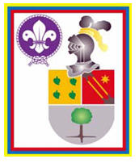

Máxima Insignia - Scout de Bolívar
En esta etapa de tu vida como Scout, ya has alcanzado un grado de madurez que te permite asumir un compromiso más grande, al proyectar tus experiencias e interactuar con la comunidad.
Cumpliendo un rol específico que ayude en el mejoramiento del entorno... Un Scout de Bolívar es reflejo de un o una joven visionario, innovador y capaz de mejorar su comunidad.
Proyecto de Vida
Todos los requisitos de esta prueba son de obligatorio cumplimiento
Desarrollo Personal
Escoger dos (2) requisitos de esta prueba
Desafío Scout
Escoger dos (2) requisitos de esta pruebaAcción Social
Escoger dos (2) requisitos de esta pruebaImportante: También deberás cumplir con los requisitos de las otra áreas del "Adelanto Progresivo": Especialidades, Actividades de los Ciclos Institucionales de Programa, Acción Comunitaria y Cursos.
El tiempo estimado de la etapa es de 6 meses, sólo para el Proyecto de Vida, los otros requisitos se deben cumplir a lo largo de toda la permanencia en la Tropa.